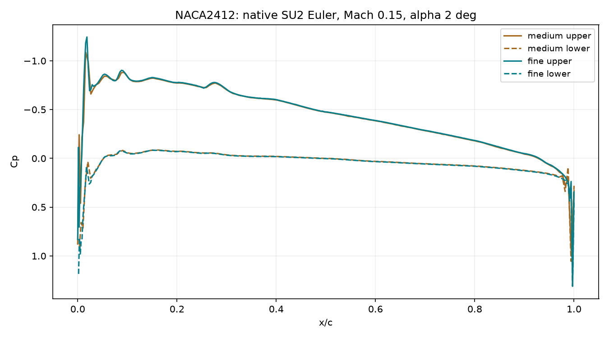

Görsel gerçek hücre bağlantıları ve çözülen basınç alanından üretildi. Profilin içi akış hücreleriyle doldurulmadı. Gmsh görünümü 38,775 gösterim üçgeniyle geri okundu.

Profil ağı ve CFD doğrulaması · 19 Ekim 2026
UIUC NACA2412 koordinatlarından Gmsh ile yeni akış ağı oluşturuldu; SU2 8.5.0 yerel Euler çözücüsü gerçekten çalıştırıldı. Koşullar araç yeterliliği için varsayımdır: Mach 0,15, alfa 2°, veter 1 m, uzak alan ±20 veter. Gerçek İHA gereksinimi değildir.
Bu koşula ait sayısal ön kabul: geçti. İki ağdaki CL değişimi %2.04; aynı DAT ve koşullarla bağımsız XFOIL inviscid CL=0.5104, ince ağ farkı %3.66. Bu iki yöntem arasında uyum deneysel doğrulama değildir.
| Ağ | Hücre | CL | Sayısal CD | Son 100 CL aralığı |
|---|---|---|---|---|
| medium | 13,914 | 0.481907 | -0.004037 | 0.000168 |
| fine | 41,768 | 0.491715 | -0.002317 | 2.31e-06 |
Önceden belirlenen eşikler: CL ağ değişimi <%3; XFOIL farkı <%5; son 100 CL aralığı <0,0002; CD aralığı <0,00002; yoğunluk kalıntısı log10 <−7; ince |sayısal CD| <0,003. Bunlar sınırlı bir yeterlilik ekranıdır; iki ağ evrensel ağ bağımsızlığı kanıtı değildir.
Görsel gerçek hücre bağlantıları ve çözülen basınç alanından üretildi. Profilin içi akış hücreleriyle doldurulmadı. Gmsh görünümü 38,775 gösterim üçgeniyle geri okundu.

Euler modeli sürtünme, sınır tabakası ve ayrılmayı çözmez. Negatif sayısal CD fiziksel itki veya gerçek profil sürüklemesi değildir; burada sayısal hata göstergesi olarak raporlanır. Geçiş/türbülans, stall, uzak alan duyarlılığı ve üç boyutlu kanat/uçak CFD kabulü açık kalır. Eski RANS çalışmasının %22,84 sürükleme ağ değişimi ve y+ kabulü bu sonuçla kapanmadı.
İlk −8 kalıntı hedefinde kuvvet kararlılığı kabul edilmedi; eski çalışma saklandı. Aynı ağ ve koşullarda −10 hedefli devam çözümü kabulü geçti. Yeniden çalıştırma ince ağda doğrudan −10 hedefini kullanır.
Ham kuvvet ve kabul kaydı · Alan eşleme ve Gmsh kontrolü · Gmsh basınç alanı · Kaynak profil çizimi · Koşullar ve kaynak
Yöntem kaynakları: UIUC profil koordinatları, Gmsh ağ boyutu alanları, SU2 resmi örnek yöntemi.